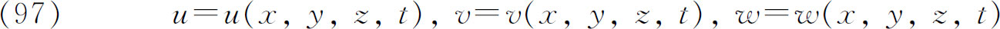
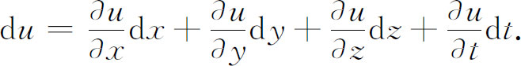
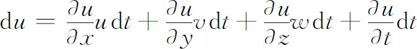
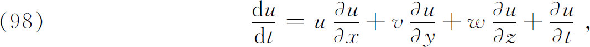
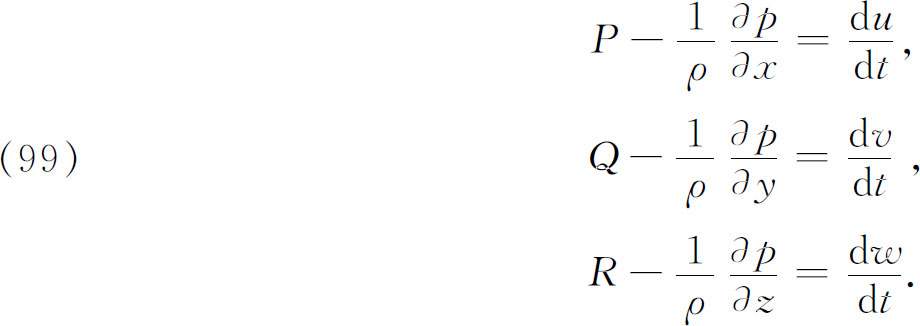
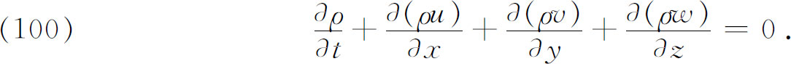

8．一阶偏微分方程组
18世纪在流体动力学和水力学研究中首次提出了偏微分方程组。诸如设计船身以减少它在水中运动的阻力，以及潮汐、河水的流动，从喷口射出的水流，水对船舷的压力的计算等实际问题推动了对不可压缩流体例如水的研究工作。对可压缩流体，特别是空气的研究工作，是为了要分析空气在船帆上的作用，设计风车叶片和了解声音的传播。我们早些时候研究过的声音传播方面的工作，在历史上是把水力学上的研究特殊化，使之适用于小振幅波动的一个应用。
欧拉在1752年一篇题为《流体运动原理》(49)的文章中处理了不可压缩流体，之后他在1755年一篇题为《流体运动的一般原理》（General Principles of the Motion of Fluids）(50)的文章中，推广了前一个工作。这里他给出了至今仍然著名的关于理想（无黏性）可压缩和不可压缩流体的流体流的方程。流体被认为是连续的，其质点是数学上的点。他考察了受到压力为p，密度为ρ以及单位质量上分量为P，Q，R的外力作用的流体小体积上的作用力。
欧拉创立的流体动力学的两种方法之一，文献中称之为空间描写，其中流体速度的分量u，v和w在流体中每一点由

给出。这里

在时间dt，质点（x，y，z）在x方向走过距离udt，在y方向走过距离vdt，在z方向走过wdt。于是在du的表达式中的实际变化量dx，dy及dz就由这些量给出，因而

或者

对dv/dt和dw/dt也有相应的表达式。这些量给出现在称为（x，y，z）处的速度变化的对流率或对流加速度。计算（x，y，z）处质点上的作用力，并应用牛顿第二定律，欧拉得到微分方程组

欧拉还推广了达朗贝尔的连续性微分方程（45），并且得到关于可压缩流的方程

这里有四个方程和五个未知函数，但是压力p作为密度的函数——状态方程——必须指定。
在1755年的文章中欧拉说：“如果我们不能洞察关于流体运动完全的知识的话，那么归结其原因，不在于力学，或不在于已知的运动原理不够充分，这里是分析本身抛弃了我们，因为流体运动的全部理论正好被化归成分析公式的解。”不幸的是，要很好地处理这些方程，分析仍嫌无能为力。于是他动手讨论某些特殊的解法。在这个题目上他还写了一些别的文章，处理船受到的阻力和船的推力。欧拉的方程并不是水力学的最终的方程。欧拉忽略了的黏性是70年后由纳维（Claude L．M．H．Navier）和斯托克斯（George Gabriel Stokes）引进的（第28章第7节）。
拉格朗日也从事流体运动的研究。在他的《分析力学》第一版中，包括一些这类的研究，他给出了欧拉的基本方程并推广了它们。这里，他把荣誉归于达朗贝尔，而没有归于欧拉。他也说流体运动方程用分析来处理是太困难了，能严密计算的只是无穷小运动的情况。
在偏微分方程组领域中，在18世纪里水力学方程是这门学科数学研究的主要启发。实际上，18世纪在方程组的解方面成就甚少。